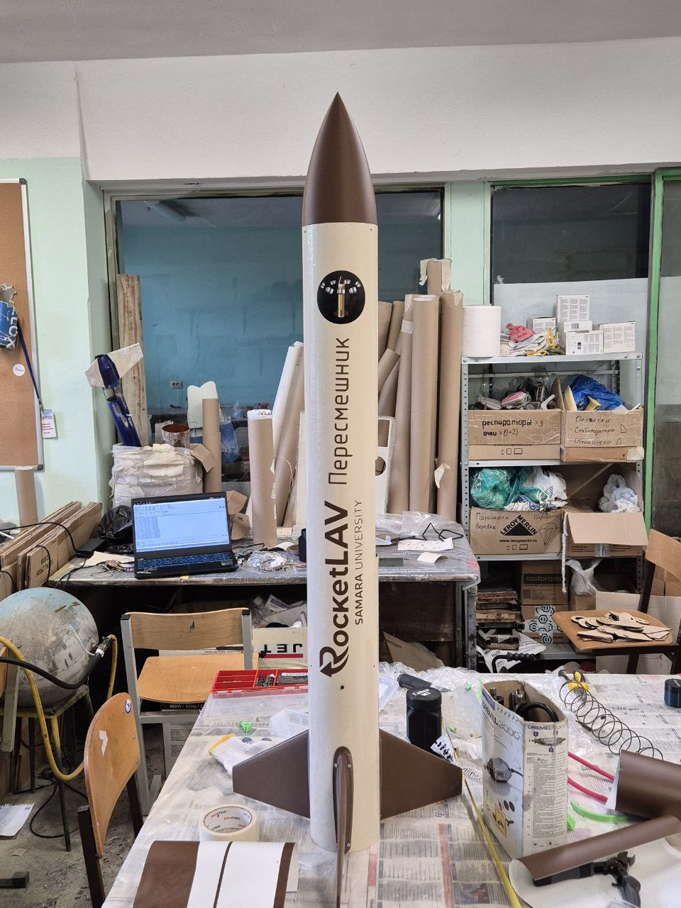

СКБ RocketLAV
Бортовая электроника для ЭМР "Пересмешник"
В течение года разрабатывалась экспериментальная модель ракеты "Пересмешник". Цель ракеты - достигнуть высоты 1000 метров, выпустить полезную нагрузку, успешно приземлиться на парашюте и обработать всю телеметрию полета. Цель проекта - получить опыт проектирования ЭМР и отработать производство базовой модульной модели для отработки различных систем (например, Система Управления Ракеты).

Я работал над проектом в роли инженера-программиста - программировал электронику и принимал активное участие в проектировании плат. Был получен опыт работы с микроконтроллерами STM32, а в частности, с STM32F103C8T6 и STM32F411CEU6, STM32F030.
Помимо микроконтроллера, на платах использовалось большое количество периферии. Подробная информация о использованной периферии приведена в таблице.
| Тип | Название |
|---|---|
| Барометр | BMP280 |
| Гигрометр | AHT10 |
| Гироскоп-акселерометр | LSM6DS33 |
| Модуль радиосвязи | E22400M30S |
| GPS-датчик | NEO-6M |
| Запись телеметрии | Слот под SD-карту |
| Сервоприводы | MG955 |
Вместе с бортовой электроникой разрабатывалась приемная станция на базе STM32F030 для приема телеметрии на ноутбук во время полета ЭМР.
В результате годовой работы был получен опыт:
- Работы с микроконтроллерами семейства STM32
- Использования различных датчиков для сбора телеметрии
- Использования GPS для определения местоположения
- Работы с радиосвязью, в частности, с протоколом LoRa
- Разработки отказоустойчивой электроники для работы при высоких нагрузках по ускорения и высоких вибраций
- Разработки алгоритмов работы ракет во время полета
В конце приятный бонус - видео запуска "Пересмешника" :)
Бибилотеки для датчиков
Во время разработки ЭМР писались библиотеки для датчиков. Все библиотеки выложены здесь. Это небольшой репозиторий, который поддерживается уже продолжительное время и активно развивается. Данный набор библиотек ориентирован на моих коллег по СКБ, поэтому было уделено много внимания на читаемость кода, работоспособности кода из коробки и комментариям.
Была сгенерирована документация для всех библиотек. Для этого использовался самодокументируемый код со стандартом javadoc и система doxygen. Одно из преимуществ библиотеки - возможность выбора между высокоуровневой библиотекой HAL и низкоуровневой LL. Одна из особенностей - весь код заточен для выполнения стандартного алгоритма ЭМР.
Во время написания этих библиотек был получен опыт:
- Написания универсального кода для упрощения работы пользователям этих библиотек
- Написания документаций и читаемого кода для пользователей
- Продолжительной разработка и поддержка репозитория
- Разработки как под HAL, так и под LL